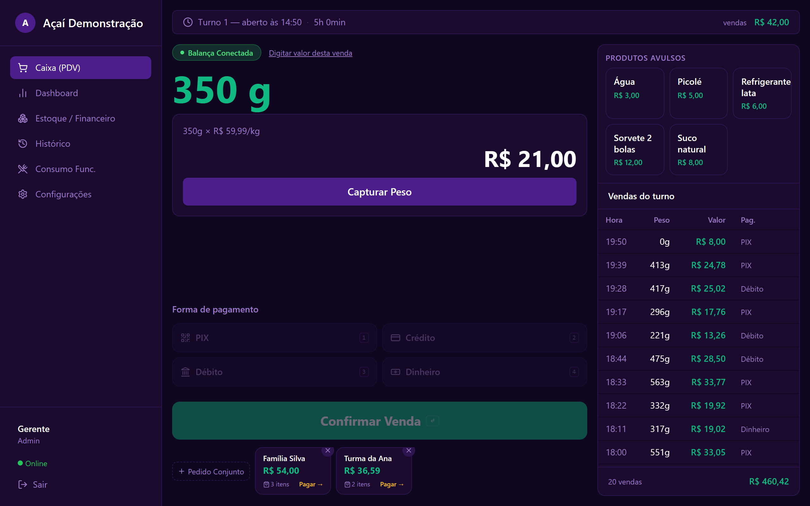
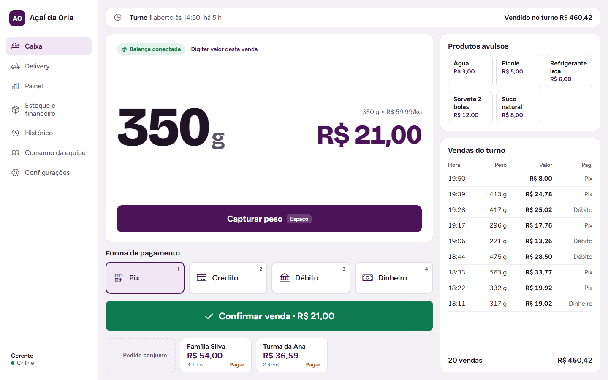
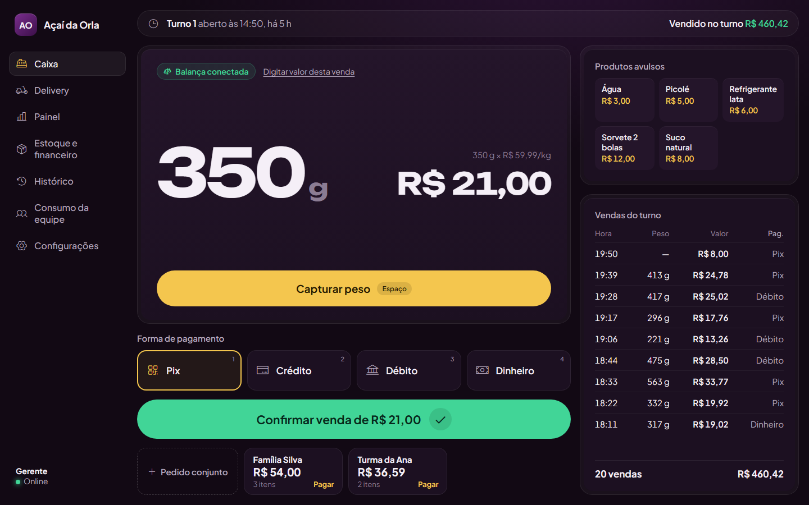
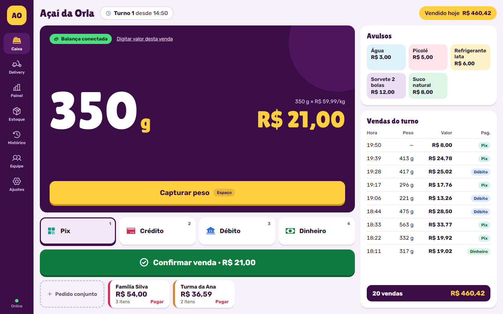

Mesma tela e mesmas funções. Escolha uma (ou peça mistura: "a cor da B com o layout da A").
Para comparar.

Claro, limpo, alto contraste. Botões grandes para toque. Lê bem em loja iluminada.

abrir tela de verdadeEscuro e refinado, evolução do visual de hoje. Peças com borda dupla, botões amarelo banana e verde.

abrir tela de verdadeBlocos de cor com cara de açaiteria: polpa, banana, morango, guaraná. Mais alegre e com personalidade.

abrir tela de verdade